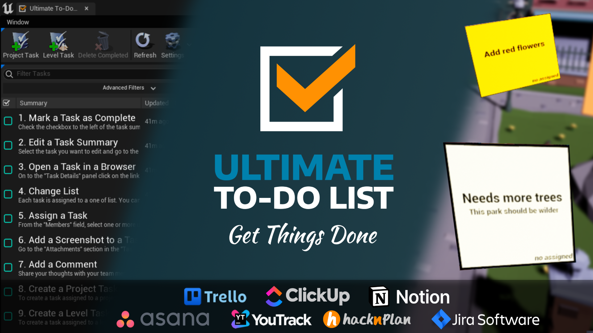

The Ultimate To-Do List plugin for Unreal Engine is an efficient tool to manage tasks. It lets you make, view and edit tasks directly in the editor. The plugin has Sticky Notes, which show tasks on a level. It also has a "Go to" button that gives you quick access to the location of a task.
The plugin also has powerful options to sort and filter tasks, and you can capture and edit screenshots. You can also add comments, and use a draft mode to complete the details of a new task before you submit it.
Your tasks stay in the service that your team already uses. Ultimate To-Do List works with these services, and each of them has a free plan:
The comparison below shows what each service gives you (see Integrations comparison). Whichever service you select, the plugin keeps nothing of its own. The tasks are in that service. Thus the other members of your team can continue to work with them in a browser or in a mobile app. They see the changes that you make in the editor.
To enable the plugin, do these steps:

Ultimate To-Do List is available as a tab in Unreal Editor. You can open the tab from the Window menu.

Ultimate To-Do List supports many services.
| YouTrack | Trello | Jira Software | Asana | HacknPlan | ClickUp | Notion | |
|---|---|---|---|---|---|---|---|
| View tasks | Yes | Yes | Yes | Yes | Yes | Yes | Yes |
| Edit tasks | Yes | Yes | Yes | Yes | Yes | Yes | Yes |
| Add tasks | Yes | Yes | Yes | Yes | Yes | Yes | Yes |
| Custom fields | Yes | Yes1 | Yes | Yes1 | No2 | Yes1 | Yes |
| Sort by columns | Yes | Yes | Yes | Yes | Yes | Yes | Yes |
| Filter | Yes | Yes | Yes | Yes | Yes | Yes | Yes |
| Sticky Notes | Yes | Yes | Yes | Yes | Yes | Yes | Yes |
| View attachments | Yes | Yes | Yes | Yes | Yes | Yes | Yes |
| Add attachments | Yes | Yes | Yes | Yes | Yes | Yes | Yes |
| Delete attachments | Yes | Yes | Yes | Yes | Yes | No2 | Yes |
| View comments | Yes | Yes | Yes | Yes | Yes | Yes | Yes |
| Add comments | Yes | Yes | Yes | Yes | Yes | Yes | Yes |
| Delete comments | Yes | Yes | Yes | Yes | Yes | Yes | No2 |
| View checklists | No2 | Yes | Yes | Yes | Yes | Yes | Yes |
| Edit checklists | No2 | Yes | Yes | Yes | Yes | Yes | Yes |
| Make projects | No | Yes | No | Yes | Yes | Yes | No2 |
| Free version users | 10 | 15 | 10 | 10 | unlimited | unlimited | unlimited4 |
| Free version storage total/per file | 30 GB /500 MB | unlimited / 10 MB | 2 GB / 2GB | unlimited / 25MB | 500 MB / 5 MB | 1 GB / 100 MB | unlimited / 5 MB |
| Free version projects | unlimited | 10 | unlimited | unlimited | unlimited | unlimited lists (max 5 Spaces) | unlimited |
1 Available in the paid version of the service.
2 The service does not have this feature.
3 The plugin does not have this feature yet.
4 When a workspace has more than one member, Notion sets a limit of 1,000 blocks.
The user interface of Ultimate To-Do List has these components:


When the plugin has downloaded all the tasks from the server, the Tasks List shows them. To see only the tasks that interest you, filter the tasks. The filter of the Tasks List uses an advanced search syntax, similar to the syntax of the Content Browser. With this syntax, you can write complex search queries. You can also find tasks by the key-value pairs of their properties. For more information, see the Advanced Search Syntax page.
Examples:
| Filter Phrase | Description |
|---|---|
| hello | tasks that contain the word 'hello' in the summary, description or additional information fields |
| ...llo | tasks with a summary, description or additional information that ends with 'llo' |
| updated >= 2017 | updated in 2017 or later |
| updated = 201712 | updated in December of 2017 |
| updated = 20171224 | updated on 24 December of 2017 |
| updated < 20171224.13 | updated before 1 pm on 24 December of 2017 |
| status != resolved | all tasks that are not resolved |
| severity > minor | severity greater than minor |
| assignedto = john_smith | assigned to john smith |
| submitted = 2018 & status = new | new tasks submitted in 2018 |
The Task Details panel shows all the information about the selected task.

The Property List has all the most important information about the selected task.
The standard properties are available by default in Mantis.

The Attachments section shows a list of attachments. For images in PNG, BMP and JPG format, the plugin can show thumbnails.

The Comments section shows all the comments on the task. You can also add new comments here.

The Output panel collects the log output of the plugin operations in one place. If a problem occurs, look here first for the cause.


In the Message Log tab, the Ultimate To-Do List section shows the same logs as the Output panel. You can make the logs more detailed in the “Debug” section of the project settings.


This window can be different for each provider.
You can edit the Ultimate To-Do List settings in the Editor Settings tab, or directly in the main tool window. The settings have three sections.


When you make a level task, the plugin automatically adds the level name, the location and the orientation to the task. On the Tasks List, a column shows this symbol for each task that has this information:

A task keeps its location information. Thus you can go very quickly to the level, at the location of the task. To do this, click this button on the toolbar of the Task Details panel:

The level viewport can show all the task markers of the level that is open. To enable this feature, select this button in the Toolbar:

When you select a sticky note in the level viewport, the task opens in the Task Details panel. When you double-click a marker, the level viewport moves to the location of the sticky note.

Before you submit a task, you can edit all its screenshots in an image editor that you select, for example Paint.

Use the Upload check box to select the files to attach.
To make the QA team more efficient, you can let the plugin do some of their repetitive work automatically.
Task Constructor is a Blueprint class that can change all the parameters of a task. For example, you can add more information, such as the name of the current quest or the skills of the player character.
To make your own Task Constructor, do these steps:
The plugin calls Construct Task for each task immediately after you add it.
The example below is for the tasks that you add in the game. It adds this information to each of these tasks: the current level, the game time and some steps to reproduce.

To set your Task Constructor, select a TaskConstructor class in the combo box in Project Settings.